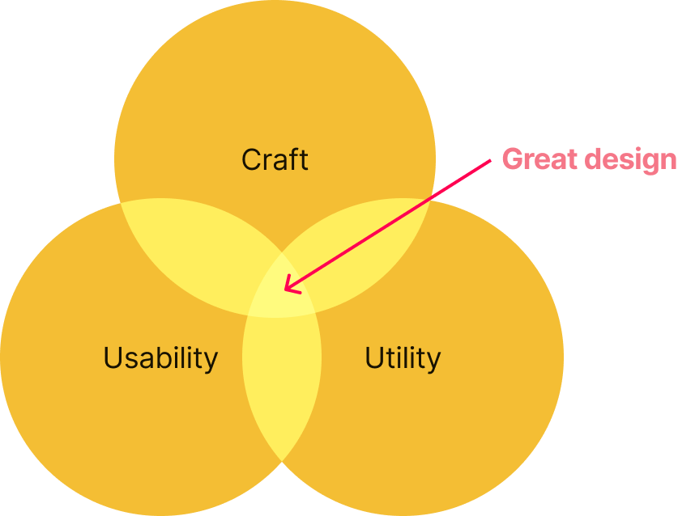
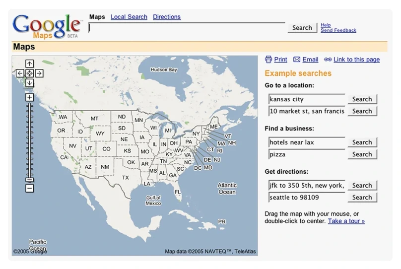
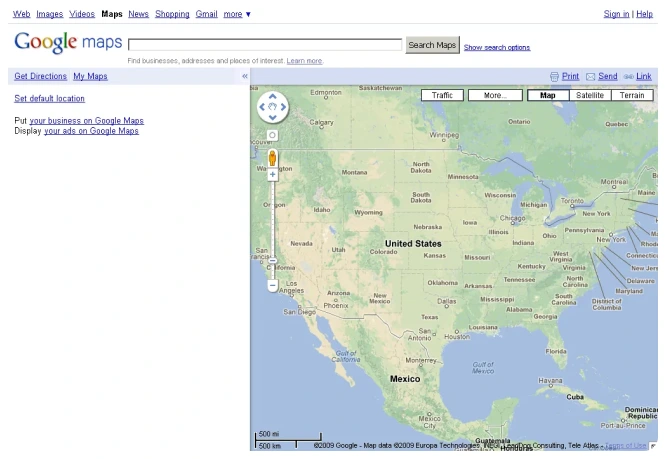
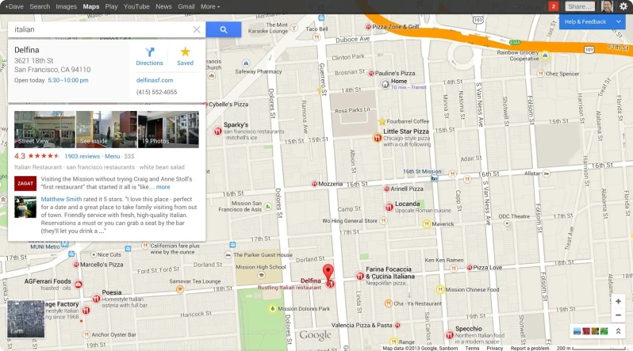
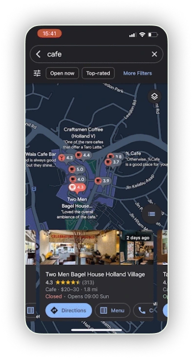

Blog
Usability, utility and craft
One of my favourite talks from Config 2024 was on the Craft of product design by Ethan Eissman, Slack's Head of Design.
Remove any one of them and something important breaks.

- Products with craft and usability but no utility can be beautiful and intuitive, but ultimately disposable
- Products with utility and craft but poor usability promise value, yet leave users frustrated.
- Products with utility and usability but no craft function perfectly well, but fail to inspire loyalty or emotional connection.
It’s a deceptively simple framework, and a useful lens to examine real products.
I’d highly recommend watching the full talk (his talk from Config 2023 is also excellent!).
A familiar case study: Google Maps
For anyone who uses Google Maps (which is most of us), Google’s own reflection on 15 years of Maps is a fascinating read, as is the timeline hosted by Version Museum.
Looking at the evolution of Maps from its 2005 beta through to today, it becomes a neat way to explore how utility, usability, and craft shift over time.
Some of this analysis is inevitably unfair. The technical constraints of 2005 were real, and expectations were different. Still, the underlying principles hold.
Let’s start with the beta.

From a modern perspective, usability is clearly limited, though that was true of most products at the time. Craft, at least on the front end, is minimal. Early Google interfaces rarely prioritised visual refinement.
But the utility is immediately obvious.
Even in this early state, Maps offered something genuinely transformational. That core value has never really faltered. Features have been added relentlessly, and many have become indispensable daily tools. Again and again, Google has answered questions users didn’t yet know they had.
Incremental change, then a shift
By 2009, Maps had been redesigned.

The differences are noticeable, but incremental. Utility continues to grow, but there’s no major leap in usability or craft yet.
That shift arrives more clearly in 2013.

This redesign coincides with Google’s broader move toward improved usability and visual refinement through Material Design. The service isn’t just adding features; it’s actively rethinking how complexity is presented.
Over the last decade, Maps has evolved through steady iteration: richer data, more capability, and interfaces that increasingly balance density with clarity.
As a product designer, I often look to Maps for inspiration when thinking about complex layouts and interaction patterns. On mobile in particular, the team does an impressive job of presenting an extraordinary amount of information in ways that remain readable and navigable, even when individual components are surprisingly small.
Why the trifecta matters
Google’s scale is unusual. The sheer volume of data it can draw from makes the utility of Maps hard to rival, even as a paid product. In theory, Maps might still be successful with less attention to craft and usability.
But I don’t think it would be this successful.
Maps isn’t just useful. It’s habitual. It’s trusted. It’s emotionally embedded in daily routines. That’s where craft and usability amplify utility rather than merely supporting it.
And while Maps is free at the point of use, it’s also part of Google’s advertising ecosystem. Delivering an exceptional experience isn’t altruism; it drives engagement, frequency, and commercial return. The combination of utility, usability, and craft creates clear business value.

Weighting matters
I’m convinced by Eissman’s argument, but I don’t think the three elements need equal weighting at all times.
Strong delivery in two areas can compensate for weakness in a third.
With Google Maps, usability occasionally suffers under the weight of its own utility. Core features are obvious and familiar, but many advanced tools remain hidden or undiscovered. Yet the craft of the interface, particularly on mobile, turns exploration into something that feels inviting rather than frustrating.
That, to me, is the key takeaway.
Utility gets people through the door.
Usability helps them stay.
Craft is what makes them care.
And when all three align, the product stops being just useful and starts becoming indispensable.
-

You’re a creative
Whether you’re an artist, a carpenter, a teacher or a dentist, creativity shows up in most jobs, even if it isn’t always obvious.
-

Where Does Creativity Fit?
You can follow a collection of frameworks, workshops and methodologies to ensure your designs are really well validated and meet all the project requirements. Does it matter if creativity is largely neglected in the process?
-

Why not?
A sort of book review. Why aren’t the best creativity books written for product designers?
-

Alchemy
Ostensibly written about the value of divergent thinking in marketing - but I really can't recommend this book enough for product designers.
-

The making of
An overview of how I went about building this website, the process of designing in the browser and making some pragmatic choices to just get it built and published.
-

The case for working slow
Whatever field you work in there’s likely a push towards efficiency and increasing productivity. Here's an alternative take on how the avoidance of certain efficiencies is in itself an efficiency.
-

Did somebody say dark patterns?
Dark, or deceptive, UX patterns are designs that force the user to take an action that is not in their best interest. They can also be highly effective at boosting conversions.
-

ChatGPT and me
A few observations on using AI to build coded prototypes as part of the design process.
-

Sustainabe Design for digital transformation
Digital transformation isn’t just about technology. It drives cultural and mindset shifts that shape our thoughts, actions, and behaviours.
-

Climate Action & the Expanding Role of Designers
Design won’t solve climate change on its own. But neither will digital transformation be sustainable without designers willing to challenge assumptions
-

Digital Sustainability, Biodiversity & Designing Within Ecosystems
I’m increasingly seeing Human-Centred Design as needing to expand into something broader — designing with people, planet, and systems in mind.
-

Designing sustainable systems
Digital transformation can accelerate climate action, biodiversity protection, and pollution reduction — but only if it’s intentionally designed.
-

A reflection on designing for sustainability
A short reflection on my key takeaways after completing the UN's Digital4Sustainability course.